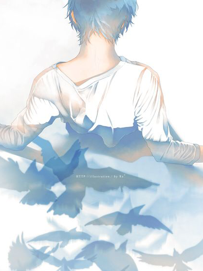
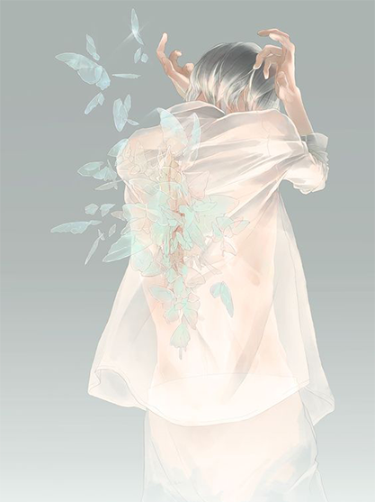

有时候站在路边看着人来人往，会觉得城市比沙漠还要荒凉。每个人都靠的那么近，但完全不知道彼此的心事，那么嘈杂，那么多人在说话，可是没有人认真在听

人们对于生命的馈赠总是显得如此心平气和，我们无法抗拒，却要一并承认错误。只要能奢望下次契机出现时能坦然迎接，可即使在期望与焦虑中熬过整个严冬，邂逅的未必就是春暖花开。
有时候站在路边看着人来人往，会觉得城市比沙漠还要荒凉。每个人都靠的那么近，但完全不知道彼此的心事，那么嘈杂，那么多人在说话，可是没有人认真在听
命运总会出其不意的给你来一个难题，这种时候你会产生一种错觉，好像有很多选择摆在你的面前，你可以随心所欲。其实这时候的你，比以往任何时刻都要孤独和艰难，你不知道迷雾什么时候才会散尽，你不知道哪条路上布满荆棘，哪条道路暗藏沼泽，唯一可以依靠的，是你的直觉，唯一可以跟随的，是你的心灵。